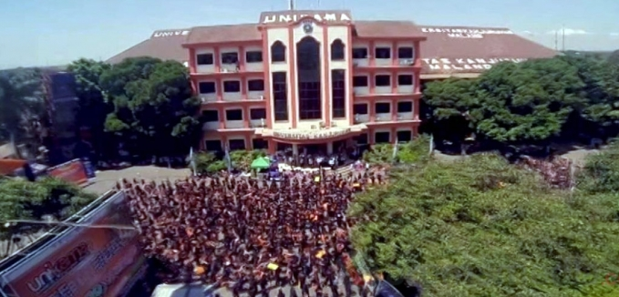

| Beranda | Mahasiswa | Perkuliahan | KHS_Mahasiswa | Tentang |
Promosi | |

Universitas KanjuruhanUniversitas Kanjuruhan Malang adalah salah satu Perguruan Tinggi Swasta terkemuka di Kota Malang dan merupakan proses pengembangan merger antara IKIP PGRI Malang dengan Sekolah Tinggi Bahasa Asing (STIBA) Kanjuruhan Malang yang bernaung di bawah bendera Yayasan Pembina Lembaga Perguruan Tinggi PGRI. Yayasan ini kemudian berubah menjadi Perkumpulan Pembina Lembaga Pendidikan Perguruan Tinggi PGRI (PPLP PT PGRI). Dengan demikian, berdirinya Universitas Kan-juruhan Malang merupakan proses pengembangan perguruan tinggi PGRI dengan SK Mendiknas nomor 106/D/0/2001. Sebelum menjadi sebuah universitas, perjalanan panjang telah mewar-nai perguruan tinggi ini. Pasang surut penyelenggaraan telah dialami dengan berbagai tantangan dan halangan, tetapi dengan dilandasi moto Brilliant, Bright, future membuat perkembangannya semakin mantap. Gagasan yang dirintis untuk mendirikan Lembaga Pendidikan Tenaga Kependidikan PGRI di Jawa Timur lahir dari peran tokoh pejuang PGRI. bernama Abdul Radjab (almarhum). Pendirian Pendidikan Tinggi PGRI bertujuan untuk meningkatkan pendidikan para guru, yang pada waktu itu tidak mendapat kesempatan melanjutkan studi ataupun tugas belajar dari pemerintah. Mengingat, sejak proklamasi sampai dengan tahun 1960-an tugas belajar untuk studi lanjut bagi guru amatlah langka. Atas pertimbangan fakta tersebut Bapak A. Radjab beserta para pendukungnya membuka suatu program pendidikan Tinggi PGRI bagi guru-guru tersebut. Ide besar ini kemudian direalisasikan pada tahun 1957 dalam bentuk program pendidikan tinggi PGRI, kursus BI (tiga tahun), dan ilmu mendidik. Pada perkembangannya, setelah kursus BI meluluskan beberapa kali lewat ujian negara, kemudian berubah menjadi FKIP PGRI Malang. Setelah keluar SK Presiden No.1 Tahun 1963 tentang Integrasi Pendidikan Tinggi, selanjutnya FKIP PGRI berubah menjadi IKIP PGRI Malang. Seiring dengan perkembangan pendidikan, banyak keinginan para guru untuk mendapatkan pendidikan tinggi. Untuk mewadahi keinginan itu kemudian dibukalah Extension Course di beberapa daerah di Jawa timur. Program ini kenyataannya dapat berkembang dengan pesat. Demi efisiensi dan efektivitas pengelolaan, dibentuklah pusat-pusat penggerak. |